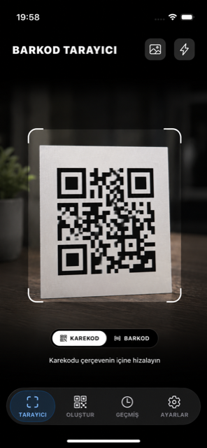
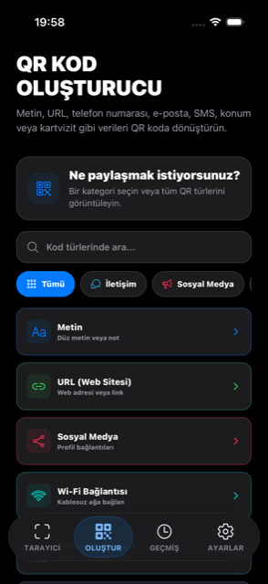
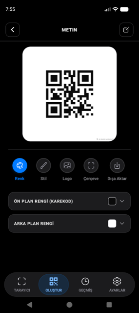
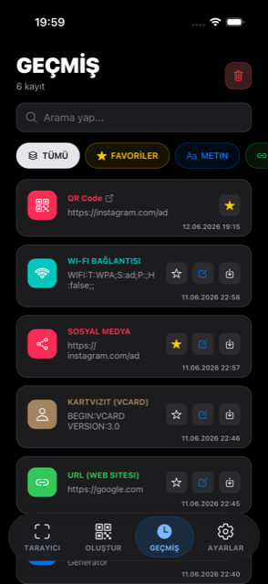

QR & Barkod · iOS ve Android
Kodu oku,
kendi tasarımınla oluştur.
Market etiketinden Wi-Fi paylaşımına kadar her şey tek uygulamada. Kamerayla saniyede tara, sonra rengini, logosunu ve çerçevesini kendin seçtiğin bir QR koda dönüştür.

Ne işe yarar
Taramadan tasarıma, tek akış.
Karmaşık menüler yok. Açılışta kamera hazır; oluştururken her ayrıntı senin kontrolünde.
Kameradan ya da galeriden anında oku
Uygulama açıldığında tarayıcı hazır. Kodu çerçeveye hizala, sonuç anında çıksın; karanlıkta fenerle, parlamada netleştirmeyle.
- QR ve barkod modları arasında tek dokunuşla geçiş
- Galerideki bir fotoğraftan kod okuma
- Bağlantıları otomatik açma ve sonucu kopyalama (isteğe bağlı)
- Haptik geri bildirim ile her okumada net onay

Düz metinden çok daha fazlası
Ne paylaşmak istediğini seç; uygulama doğru biçimi senin yerine hazırlasın. Wi-Fi, kartvizit, konum, ödeme ve fazlası için hazır şablonlar.
- 21 farklı içerik türü — Wi-Fi, vCard, konum, IBAN, etkinlik…
- İletişim, sosyal medya gibi kategorilerle filtreleme
- Tür içinde arama ile hızlı erişim
- Her tür için doğrulanmış, tarayıcı uyumlu çıktı

QR kodun gerçekten senin görünsün
Çoğu uygulama siyah-beyaz bir kare verir. Burada beş ayrı tasarım katmanıyla markana, etkinliğine ya da zevkine uyan bir kod oluşturursun.
- Renk: ön plan ve arka plan için özel renkler
- Stil: kare, nokta ve yuvarlatılmış desen seçenekleri
- Logo: ortaya kendi markanı veya simgeni yerleştir
- Çerçeve ekle, ardından PNG/JPEG olarak dışa aktar

Her kod elinin altında
Taradığın ve kaydettiğin kodlar cihazında düzenli durur. Aradığını bul, favorile, gerektiğinde sil — hepsi senin kontrolünde.
- Tüm kayıtlarda arama ve türlere göre filtreleme
- Sık kullandıklarını favorilere ekleme
- Tek tek ya da topluca silme
- Performans için son 250 tarama + 250 oluşturma tutulur
21 hazır şablon
Hangi türü oluşturmak istersen.
Her biri arkada doğru standartla biçimlendirilir; sen yalnızca bilgiyi girersin.